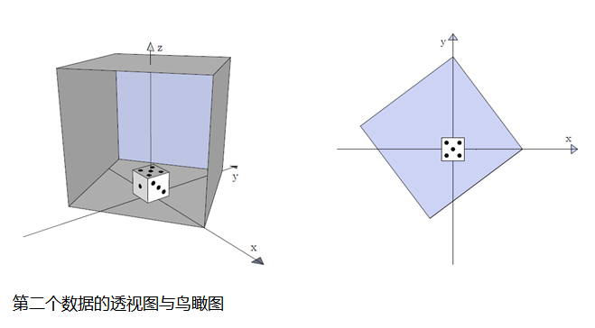

输入包括4行，
第k行包括两个浮点数xk和yk(-5<=xk,yk<=5)——底面第k个顶点在平面x-y内的座标。顶点的座标将以逆时针顺序给出。底面为正方形且每条边长为5。
盒子将完全包含骰子，并且除了底面，骰子与盒子不会有任何的接触或交叉。
你将一只大黄蜂困在一个餐桌上的盒子里。不幸的是，你的骰子也被困在其中，你无法继续玩大富翁了，除非接受大黄蜂的愤怒把骰子拿出来。你转而计算大黄蜂所能看见的点数来消磨时间。
大黄蜂、骰子和盒子都在一个标准三维座标系中，其x轴指向东方，y轴指向北方，z轴指向上方。餐桌的桌面与平面x-y重合。

骰子是一个1×1×1的立方体，放置在盒子的底部、座标系的原点上。即骰子的一组对角顶点的座标为(-0.5,-0.5,0)和(0.5,0.5,1)。骰子的顶面点数为5，北面点数为1，东面点数为3，南面点数为6，西面点数为4，底面(因为看不见所以无关紧要)点数为2。
盒子是一个5×5×5的立方体。盒子通过其底面(一个5×5的正方形)的座标说明。
假设大黄蜂随机地在盒子中盘旋，请计算被黄蜂看到的点数的期望值。骰子是不透明的，因此，大黄蜂能看见点数仅当其座标与点数所在的骰子表面中心的连线没有穿过骰子。
输入包括4行，
第k行包括两个浮点数xk和yk(-5<=xk,yk<=5)——底面第k个顶点在平面x-y内的座标。顶点的座标将以逆时针顺序给出。底面为正方形且每条边长为5。
盒子将完全包含骰子，并且除了底面，骰子与盒子不会有任何的接触或交叉。
输出一个浮点数——可见点数的期望值。答案允许小于10-6的误差。
Input1
-2.5 -1.5
2.5 -1.5
2.5 3.5
-2.5 3.5
Input2
3 0
0 4
-4 1
-1 -3
Output1
10.6854838710
Output2
10.1226478495